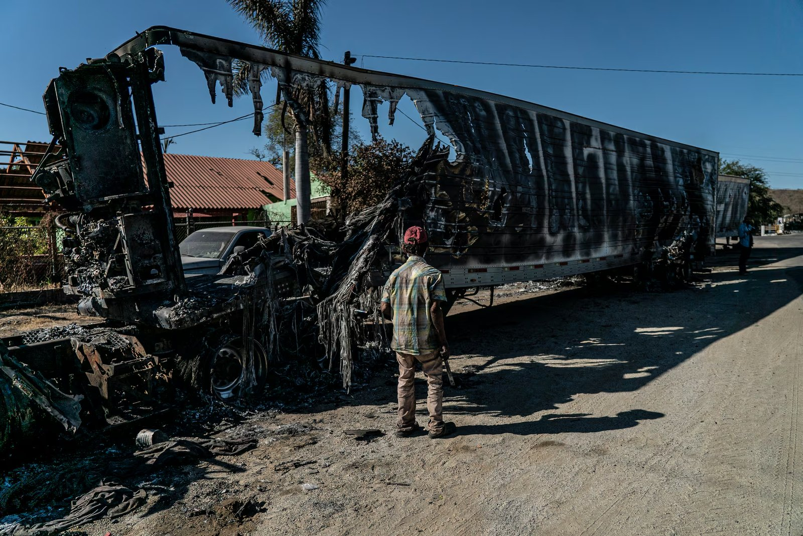

Imagen: Gladys Serrano
Desde que se declaró la guerra contra el narco en el 2006 por el entonces presidente Felipe Calderón Hinojosa, México se ha visto envuelto en una serie de episodios violentos vinculados al crimen organizado y al narcotráfico que han involucrado al gobierno y a la población civil. Resulta cada vez más difícil concebir al país como un espacio seguro para personas de todos los niveles socioeconómicos y contextos culturales, cuando quienes terminan pagando el costo más alto son aquellos que quedan atrapados en el fuego cruzado.
El motín en el Penal del Topo Chico en 2016 (con una cifra oficial de 49 muertos, la cual ha sido cuestionada varias veces) evidenció el grado de autogobierno y control criminal dentro de las prisiones. El “Culiacanazo” en 2019 mostró la capacidad del Cártel de Sinaloa para paralizar una ciudad tras la captura de Ovidio Guzmán. Las masacres de San Fernando y Allende (2010-2011), atribuidas a Los Zetas, revelaron el uso de violencia extrema como mecanismo de control territorial y disciplinamiento social.
A estos hechos se suman diferentes tragedias como la masacre de Villas de Salvárcar en 2010, donde 16 jóvenes fueron asesinados en una fiesta; el hallazgo de alrededor de 340 cuerpos en fosas clandestinas en Durango en 2011; y la masacre del 27 de octubre de 2010 en Tepic. Cada uno de estos episodios demostraron la vulnerabilidad de la población civil frente a estructuras criminales que operaban con amplia capacidad de violencia y control territorial.
El derribamiento de un helicóptero militar en 2015 por parte del Cártel Jalisco Nueva Generación y la reciente captura y muerte de su líder, Nemesio Oseguera Cervantes, ilustran cómo estos grupos desafían abiertamente al Estado y, al mismo tiempo, se reconfiguran tras cada golpe.
Si algo han enseñado estos episodios es la capacidad de adaptación de las organizaciones criminales. Se fragmentan, se consolidan, negocian, confrontan y reconstruyen sus estructuras según el contexto. La violencia no responde a una sola lógica, ni todos los territorios presentan el mismo tipo de organización criminal.
Como advierte Christopher Blattman, no existe una solución universal para el crimen organizado. Cada país, e incluso cada estado o región, enfrentan configuraciones criminales distintas: algunas fragmentadas, otras consolidadas, otras con arraigo territorial o transnacionales. Intentar aplicar la misma estrategia siempre, ignora estas diferencias estructurales y corren el riesgo de fracasar o de agravar el problema.
México enfrenta múltiples sistemas que operan con lógicas distintas. Entender esa diversidad no garantiza una solución inmediata, pero sí es el primer paso para evitar repetir estrategias que, una y otra vez, han demostrado ser insuficientes.
CIPMEX · Centro de Investigación para la Paz México, A.C. · Paz que se piensa, paz que se construye